전기기능사 (2012-02-12 기출문제)
1과목: 전기 이론
1. 각속도 ω = 300[rad/sec]인 사인파 교류의 주파수[Hz]는 얼마인가?
- 70/π
- 150/π
- 180/π
- 360/π
(정답률: 74%)

2. R1, R2, R3의 저항 3개를 직렬 접속했을 때의 합성저항 값은?
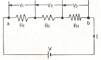
- R = R1+ R2․ R3
- R = R1․ R2 + R3
- R = R1․ R2 ․ R3
- R = R1+ R2 + R3
(정답률: 88%)
3. 10[A]의 전류로 6시간 방전할 수 있는 축전지의 용량은?
- 2[Ah]
- 15[Ah]
- 30[Ah]
- 60[Ah]
(정답률: 88%)
4. 감은 횟수 200회의 코일 P 와 300회의 코일 S를 가까이 놓고 P에 1[A]의 전류를 흘릴 때 S와 쇄교하는 자속이 4×10-4[Wb]이었다면 이들 코일 사이의 상호 인덕턴스는?
- 0.12[H]
- 0.12[mH]
- 0.08[H]
- 0.08[mH]
(정답률: 39%)
5. 그림과 같은 평형 3상 △ 회로를 등가 Y결선으로 환산하면 각사의 몇[Ω]이 되는가?(단, Z=12[Ω]이다.)
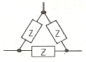
- 48[Ω]
- 36[Ω]
- 4[Ω]
- 3[Ω]
(정답률: 60%)
6. 3상 교류를 Y결선하였을 때 선간전압과 상전압, 선전류와 상전류의 관계를 바르게 나타낸 것은?
- 상전압 = 루트3 선간접압
- 선간전압 = 루트3상전압
- 선전류=루트3상전류
- 상전류=루트3선전류
(정답률: 67%)
7. "회로에 흐르는 전류의 크기는 저항에 ( ㉮ )하고, 가해진 전압에 (㉯ ) 한다." ( )에 알맞은 내용을 바르게 나열한 것은?
- ㉮-비례, ㉯-비례
- ㉮-비례, ㉯-반비례
- ㉮-반비례, ㉯-비례
- ㉮-반비례, ㉯-반비례
(정답률: 84%)
8. 다음 중 파형률을 나타내는 것은?
- 실효값/평균값
- 최대값/실효값
- 평균값/실효값
- 실효값/최대값
(정답률: 73%)
9. 다음 중 1[J]과 같은 것은?(문제 오류로 정답은 2번입니다. 아마도 2번 4번 중복 답안으로 인정된듯 합니다. 여기서는 2번을 누르면 정답 처리 됩니다.)
- 1[cal]
- 1[WㆍS]
- 1[kgㆍm]
- 1[Nㆍm]
(정답률: 87%)
10. 자체 인덕턴스 2[H]의 코일에 25[J]의 에너지가 저장되어 있다면 코일에 흐르는 전류는?
- 2[A]
- 3[A]
- 4[A]
- 5[A]
(정답률: 72%)
11. 다음 에서 자석의 일반적인 성질에 대한 설명으로 틀린 것은?
- N극과 S극이 있다.
- 자력선은 N극에서 나와 S극으로 향한다.
- 자력이 강할수록 자기력선의 수가 많다.
- 자석은 고온이 되면 자력이 증가한다.
(정답률: 82%)
12. 브리지 회로에서 미지의 인덕턴스 Lx를 구하면?
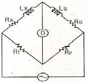
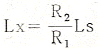
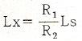
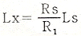
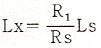
(정답률: 60%)
13. 기전력 1.5[V], 내부저항 0.2[Ω]인 전지 5개를 직렬로 접속하여 단락시켰을 때의 전류[A]는?
- 1.5[A]
- 2.5[A]
- 6.5[A]
- 7.5[A]
(정답률: 73%)
14. 플레밍의 오른손 법칙에서 셋째 손가락의 방향은?
- 운동 방향
- 자속밀도의 방향
- 유도기전력의 방향
- 자력선의 방향
(정답률: 75%)
15. 비정현파의 실효값을 나타내는 것은?
- 최대파의 실효값
- 각 고조파의 실효값의 합
- 각 고조파의 실효값의 합의 제곱근
- 각 고조파의 실효값의 제곱의 합의 제곱근
(정답률: 67%)
16. C1, C2를 직렬로 접속한 회로에 C3를 병렬로 접속하였다. 이 회로의 합성 정전용량[F]은?
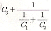
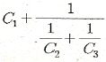
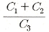
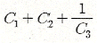
(정답률: 77%)
17. 두개의 서로 다른 금속의 접속점에 온도차를 주면 열기전력이 생기는 현상은?
- 홀 효과
- 줄 효과
- 압전기 효과
- 제벡 효과
(정답률: 77%)
18. 진공 중에서 같은 크기의 두 자극을 1[m] 거리에 놓았을 때, 그 작용하는 힘은?(단, 자극의 세기는 1[Wb]이다.)
- 6.33 × 104[N]
- 8.33 × 104[N]
- 9.33 × 105[N]
- 9.09 × 109[N]
(정답률: 71%)
19. Z1=5+j3[Ω]과Z2=7-j3[Ω]이 직렬 연결된 회로에 V=36[V]를 가한 경우의 전류[A]는?
- 1[A]
- 3[A]
- 6[A]
- 10[A]
(정답률: 61%)
20. 2[C]의 전기량이 이동을 하여 10[J]의 일을 하였다면 두 점 사이의 전위차는 몇 [V]인가?
- 0.2[V]
- 0.5[V]
- 5[V]
- 20[V]
(정답률: 67%)
2과목: 전기 기기
21. 회전자 입력을 P2, 슬립을 s라 할때 3상 유도 전동기의 기계적 출력의 관계식은?
- sP2
- (1-s)P2
- s2P2
- P2/s
(정답률: 68%)
22. 농형 유도 전동기의 기동법이 아닌 것은?
- 전전압기동법
- 저항 2차권선기동법
- 기동보상기법
- Y-△ 기동법
(정답률: 64%)
23. 다음 중 SCR의 기호는?
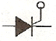
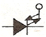
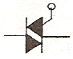
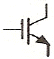
(정답률: 93%)
24. 유도 전동기의 회전자에 슬립 주파수의 전압을 공급하여 속도 제어를 하는 것은?
- 2차 저항법
- 2차 여자법
- 자극수 변환법
- 인버터 주파수 변환법
(정답률: 43%)
25. 보호 계전기의 기능상 분류로 틀린 것은?
- 차동 계전기
- 거리 계전기
- 저항 계전기
- 주파수 계전기
(정답률: 39%)
26. 전력계통에 접속되어 있는 변압기나 장거리 송전시 정전 용량으로 인한 충전특성 등을 보상하기 위한 기기는?
- 유도 전동기
- 동기 전동기
- 유도 발전기
- 동기 조상기
(정답률: 66%)
27. 동기 발전기의 병렬 운전 조건이 아닌 것은?
- 기전력의 크기가 같을 것
- 기전력의 위상이 같을 것
- 기전력의 주파수가 같을 것
- 기전력의 용량이 같을 것
(정답률: 73%)
28. 동기 전동기의 전기자 전류가 최소일 때 역률은?
- 0.5
- 0.707
- 0.886
- 1.0
(정답률: 55%)
29. 우산형 발전기의 용도는?
- 저속 대용량기
- 저속 소용량기
- 고속 대용량기
- 고속 소용량기
(정답률: 57%)
30. 그림과 같은 분산 기동형 단상 유도 전동기를 역회전시키기 위한 방법이 아닌 것은?
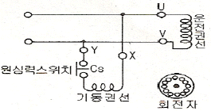
- 원심력스위치를 개로 또는 폐로 한다.
- 기동권선이나 운전권선의 어느 한 권선의 단자접속을 반대로 한다.
- 기동권선의 단자접속을 반대로 한다.
- 운전권선의 단자접속을 반대로 한다.
(정답률: 32%)
31. 다음 중 절연 저항을 측정하는 것은?
- 캘빈더블브리지법
- 전압전류계법
- 휘이스톤 브리지법
- 메거
(정답률: 65%)
32. 실리콘 제어 정류기(SCR)에 대한 설명으로 적합하지 않은 것은?
- 정류 작용을 할 수 있다.
- P-N-P-N 구조로 되어 있다.
- 정방향 및 역방향의 제어 특성이 있다.
- 인버터 회로에 이용될 수 있다.
(정답률: 57%)
33. 반파 정류회로에서 변압기 2차 전압의 실효치를 E[V]라 하면 직류 전류 평균치는?(단, 정류기의 전압강하는 무시 한다.)
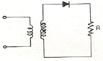
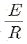
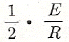
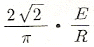
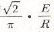
(정답률: 63%)
34. 브흐홀츠 계전기의 설치 위치는?
- 변압기 주탱크 내부
- 콘서베이터 내부
- 변압기의 고압측 부싱
- 변압기 본체와 콘서베이터 사이
(정답률: 80%)
35. 전격전압 250[V], 정격출력 50[kW]의 외분권 복권발전기가 있다. 분권계자 저항이 25[Ω]일 때 전기자 전류는?
- 100[A]
- 210[A]
- 2000[A]
- 2010[A]
(정답률: 45%)
36. 무부하에서 119[V]되는 분권 발전기의 전압 변동률이 6[%]이다. 정격 전부하 전압은 약 몇 [V]인가?
- 110.2
- 112.3
- 122.5
- 125.3
(정답률: 58%)
37. 직류기의 전기자 철심을 규소 강판으로 성층하여 만드는 이유는?
- 가공하기 쉽다.
- 가격이 염가이다.
- 철손을 줄일 수 있다.
- 기계손을 줄일 수 있다.
(정답률: 75%)
38. 변압기의 규격 효율은?
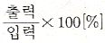
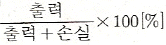
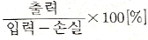
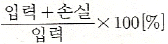
(정답률: 70%)
39. 5.5[kW], 220[V] 유도전동기의 전전압 기동시의 기동전류가 150[A]이었다. 여기에 Y-△ 기동시 기동전류는 몇 [A]가 되는가?
- 50
- 70
- 87
- 95
(정답률: 44%)
40. 직류 전동기의 속도제어 방법이 아닌 것은?
- 전압 제어
- 계자 제어
- 저항 제어
- 플러깅 제어
(정답률: 62%)
3과목: 전기 설비
41. 저압 연접 인입선은 인입선에서 분기하는 점으로 부터 몇[m]를 넘지 않는 지역에 시설하고 폭 몇 [m]를 넘는 도로를 횡단하지 않아야 하는가?
- 50[m], 4[m]
- 100[m], 5[m]
- 150[m], 6[m]
- 200[m], 8[m]
(정답률: 70%)
42. 특별 제3종 접지공사의 접지 저항 값은 몇 [Ω] 이하 이어야 하는가?(오류 신고가 접수된 문제입니다. 반드시 정답과 해설을 확인하시기 바랍니다.)(관련 규정 개정전 문제로 여기서는 기존 정답인 1번을 누르면 정답 처리됩니다. 자세한 내용은 해설을 참고하세요.)
- 10
- 15
- 20
- 100
(정답률: 68%)
43. 애자사용공사의 저압옥내배선에서 전선 상호간의 간격은 얼마 이상으로 하여야 하는가?
- 2[㎝]
- 4[㎝]
- 6[㎝]
- 8[㎝]
(정답률: 62%)
44. 풀장용 수중조명등에 사용하는 절연 변압기 1차와 2차권선과의 사이에 설치하는 금속제 혼촉방지판의 접지공사 방법은?(관련 규정 개정전 문제로 여기서는 기존 정답인 1번을 누르면 정답 처리됩니다. 자세한 내용은 해설을 참고하세요.)
- 제1종 접지공사
- 제2종 접지공사
- 제3종 접지공사
- 특별 제3종 접지공사
(정답률: 50%)
45. 절연전선을 동일 금속덕트 내에 넣을 경우 금속덕트의 크기는 전선의 피복절연물을 포함한 단면적의 총합계가 금속덕트 내 단면적의 몇 [%]이하가 되도록 선정하여야 하는가?(단, 제어회로 등의 배선에 사용하는 전선만을 넣는 경우 이다.)
- 30%
- 40%
- 50%
- 60%
(정답률: 52%)
46. 사람이 접촉될 우려가 있는 곳에 시설하는 경우 접지극은 지하 몇 [㎝]이상의 깊이에 매설하여야 하는가?
- 30
- 45
- 50
- 75
(정답률: 65%)
47. 금속관에 나사를 내기 위한 공구는?
- 오스터
- 토치램프
- 펜치
- 유압식 벤더
(정답률: 82%)
48. 진열장 안에 400[V]미만인 저압 옥내배선 시 외부에서 보기 쉬운 곳에 사용하는 전선을 단면적이 몇 [mm2]이상의 코드 또는 캡타이어 케이블이어야 하는가?
- 0.75[mm2]
- 1.25[mm2]
- 2[mm2]
- 3.5[mm2]
(정답률: 52%)
49. 경질비닐전선관 1본의 표준 길이는?
- 3[m]
- 3.6[m]
- 4[m]
- 4.6[m]
(정답률: 56%)
50. 제3종 접지공사 및 특별 제3종 접지공사의 접지선은 공칭 단면적 몇 [mm2]이상의 연동선을 사용하여야 하는가?(관련 규정 개정전 문제로 여기서는 기존 정답인 1번을 누르면 정답 처리됩니다. 자세한 내용은 해설을 참고하세요.)
- 2.5
- 4
- 6
- 10
(정답률: 54%)
51. 변압기의 보호 및 개폐를 위해 사용되는 특고압 컷아웃 스위치는 변압기 용량의 몇 [kVA]이하에 사용되는가?
- 100[kVA]
- 200[kVA]
- 300[kVA]
- 400[kVA]
(정답률: 47%)
52. 교통 신호등 제어 장치의 금속제 외함에는 제 몇 종 접지 공사를 해야 하는가?(오류 신고가 접수된 문제입니다. 반드시 정답과 해설을 확인하시기 바랍니다.)
- 제1종 접지공사
- 제2종 접지공사
- 제3종 접지공사
- 특별 제3종 접지공사
(정답률: 51%)
53. 화약류 저장소 안에는 백열전등이나 형광등 또는 이에 전기를 공급하기 위한 공작물에 한하여 전로의 대지 전압을 몇 [V]이하의 것을 사용하는가?
- 100[V]
- 200[V]
- 300[V]
- 400[V]
(정답률: 63%)
54. 네온 검전기를 사용하는 목적은?
- 주파수 측정
- 충전 유무조사
- 전류 측정
- 조도를 조사
(정답률: 49%)
55. 부식성 가스 등이 있는 장소에 시설할 수 없는 배선은?
- 애자사용 배선
- 제1종 금속제 가요전선과 배선
- 케이블 배선
- 캡타이어 케이블 배선
(정답률: 45%)
56. 합성수지제 가요전선관으로 옳게 짝지어진 것은?
- 후강전선관과 박강전선관
- PVC전선관과 PF전선관
- PVC전선관과 제2종 가요전선관
- PF전선관과 CD전선관
(정답률: 45%)
57. 옥외용 비닐 절연 전선의 약호(기호)는?
- VV
- DV
- OW
- NR
(정답률: 78%)
58. 480[V] 가공인입선이 철도를 횡단할 때 레일면산의 최저 높이는 몇 [m]인가?
- 4[m]
- 4.5[m]
- 5.5[m]
- 6.5[m]
(정답률: 64%)
59. 케이블을 구부리는 경우는 피복이 손상되지 않도록 하고 그 굴곡부의 곡률반경은 원칙적으로 케이블이 단심인 경우 완성품 외경의 몇 배 이상이어야 하는가?
- 4
- 6
- 8
- 10
(정답률: 38%)
60. 설비용량 600[kW], 부등률 1.2, 수용률 0.6 일 때 합성최대전력[kW]은?
- 240[kW]
- 300[kW]
- 432[kW]
- 833[kW]
(정답률: 35%)
ω = 2πf
따라서, f = ω/2π 입니다.
주어진 각속도 ω = 300[rad/sec]를 이용하여 주파수를 구하면,
f = 300/2π ≈ 47.75[Hz]
하지만 보기에서는 답이 "150/π"로 주어져 있습니다. 이는 다음과 같이 계산할 수 있습니다.
f = ω/2π = 300/2π = 150π/π2 = 150/π
따라서, 정답은 "150/π"입니다.